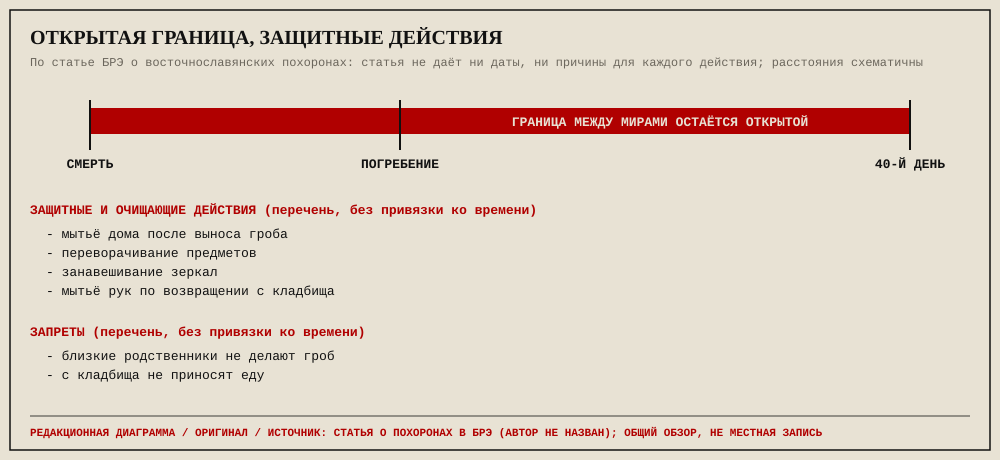

ТОМ III · ЛИСТ V · 04 / 04
ЗАПРЕТ, ПРИМЕТА И ЗАЩИТА
Завешенные зеркала, вылитая вода и причины, которые к ним прилагают
Что, по источникам, делали в доме скорби, какие причины записаны для каждого действия и где сообщения расходятся. Обычаи не предлагаются как правила.
Обычаи по прежней этнографии; полевые работы 2018–2019 · Восточнославянские деревни; Русский Север; Хиславичский район Смоленской области · Русская похоронная практика и её защитные и очистительные действия
V / 01
Две цели и действия, которые им служат
Энциклопедическая статья о восточнославянской похоронной обрядности говорит, что обряд работает в двух направлениях: одни действия помогают умершему дойти до иного мира, другие защищают живых от мёртвых. К её защитным и очистительным действиям относятся мытьё дома после выноса гроба, переворачивание предметов, завешивание зеркал и мытьё рук по возвращении с кладбища. К запретам — изготовление гроба близкими родственниками и принос еды с кладбища.
Объяснение статьи общее: мёртвые могут вредить живым, а граница между мирами остаётся открытой от смерти до погребения и сорокового дня. Для каждого действия отдельной причины она не даёт и примеры не датирует. Автор на странице не назван. В статье нет списка литературы, но авторитеты названы в тексте: Байбурин (1993), Разумова (2012), Толстая (2009, 2019), Спасский (1877) и сборник материалов о быте 1890 года. Мытьё как снятие примет живого приписано Байбурину; эпистолярный характер севернорусских причитаний — Толстой.
Барсов (1872, с. 312) перечисляет действия, которые совершают, чтобы не бояться покойников: щупают пятки у умершего, при прощании крепко целуют его, на пути на кладбище смотрят из-под дровней на ноги лошади, везущей мертвеца, по возвращении касаются пальцами домашней печки, а если он всё-таки начинает беспокоить привидениями, то на Свири прогоняют его уздой. Он даёт это как известные обычаи из разных мест, а не как один обряд, и ни к одному действию не прилагает причины, кроме названной цели. Он добавляет, что когда человек умирает без покаяния, его родственники кланяются в ноги всякому, приходящему в церковь, а иногда и всякому встречному в течение двух-трёх недель, прося прощения грехов умершего, в убеждении, что грехи переходят на живых, участвующих в отпевании или принимающих поклоны; и что в некоторых приходах Каргопольского уезда обычая поминовения нет вовсе, о чём сложилась пословица «мёртвой костью не шевели».
V / 03
Обмывание
Обмывание тела в обоих источниках — обязательная часть обряда. Энциклопедия ссылается на учёного, который доказывает, что строгость правила указывает на цель, помимо чистоты: снять то, что отмечало человека как живого. На Русском Севере, по её словам, обмывание совершали специально приглашённые люди, обычно женщины, вышедшие из детородного возраста.
В Хиславичском районе Смоленской области информанты А. Рыко говорили, что к обмыванию приглашали соседей, женщин женщины, мужчин мужчины, и она не нашла названного запрета на участие родственников. Запрет в энциклопедии относится к изготовлению гроба, а не к обмыванию; в статье Рыко нет запрета для родственников при обмывании, а исключение близких, по её словам, соответствовало бы общей пограничной роли обмывания, как более широкая закономерность, а не записанное местное правило. Источники описывают разные места, и складывать их нельзя.
V / 04
Обзор 1927 года: что делали в доме
Зеленин в обзоре восточнославянской этнографии (1927), § 132, перечисляет действия при смерти. В момент смерти рядом с умирающим ставили сосуд с водой; многие говорили, что видели, как вода колышется, словно от купания только что отлетевшей души. Он стоял на столе или на подоконнике сорок дней, и считали, что в это время душа ещё не ушла на тот свет, а по мнению некоторых, пьёт эту воду. Тогда же открывали печные трубы или форточку и вывешивали из окна кусок холста или полотенце. Это объясняли по-разному: душа вытирается им, утирает слёзы или отдыхает на нём. Зеленин предполагает, что сначала холст облегчал душе выход из дома и возвращение. Долгую агонию относили на счёт знакомства с нечистой силой, и тогда ломали конёк или снимали доску потолка, чтобы душа могла вылететь. На глаза клали медные монеты, чтобы покойник не взглянул на кого-нибудь из членов семьи, который тогда умрёт. Постель, на которой умер человек, выбрасывали или относили в курятник, чтобы петух её очистил.
Когда вносили гроб, все выходили из дома, особенно беременные женщины; они выходили и при выносе, и им нельзя было обмывать покойника, иначе умер бы их будущий ребёнок. В Олонецкой губернии, пишет он по Барсову, гроб выносили через окно, чтобы покойник не нашёл дороги назад; несли ногами вперёд и трижды ударяли о порог, чтобы он простился со старым жильём. Воду, стоявшую в доме в момент смерти, выливали, потому что её мог пить умерший. За процессией шла женщина с банным веником, мела пол до порога и разбрызгивала воду, потом пол мыли. Зеленин видит в этом магию, не гигиену, и приводит слова информантов: воду льют, «чтобы смыть следы покойника». Пока тело в доме, пол не метут, «чтобы не вымести заодно и живых»; после выноса мусор заметают к дому, чтобы его обитатели остались. Позади процессии и на гроб бросают рожь и ячмень, «чтобы в доме никто больше не умирал». По лавке, где лежал умерший, ударяют топором или ножом, «чтобы отсечь смерть». Пока тело в доме, хлеб не пекли, а в деревне до похорон нельзя было ни сеять, ни сажать, иначе посевы не взойдут.
Зеленин смешивает русский, украинский и белорусский материал; здесь взяты сведения, которые он даёт для русских или Русского Севера или оставляет общими. Подробности он берёт из архива Русского географического общества и от местных собирателей и приводит по томам и номерам; файлы архива не видели. Датировок нет. В прочитанных местах о завешивании зеркал не сказано, так что материал о зеркалах на этом листе опирается на три других источника.
V / 05
Делали без объяснения
Рыко пишет, что жители пограничья часто выполняют похоронные действия, не умея сказать, для чего они, и что с угасанием мотивов угасает и чувство обязательности. Это её наблюдение по одному району, основанное на памяти информантов, и она говорит, что неясно, местная ли это тенденция.
Здесь это важно потому, что причины, которые другие источники прилагают к защитным действиям, — это причины, собранные у людей или приписанные им в определённое время. Это не неизменный смысл, который всякое действие всегда несло.
V / 06
Почему зеркало?
О завешивании зеркал записано несколько причин. Иеромонах, пишущий против обычая, сообщает, что говорили так: душа не должна испугаться своего отражения, или мёртвый не должен напугать родных, или душа может уйти в «зазеркалье», которым, по его словам, правит дьявол. Рувье-Уиллоуби, пересказывая прежних этнографов, называет причиной, что душа не должна оказаться в ловушке, и связывает зеркала с водой, которую тоже выливали, потому что в ней душа могла оказаться в ловушке.
Эти причины друг с другом не согласуются, и ни одна здесь не показана как исходная. Церковный автор настроен враждебно и приводит народные причины, чтобы их отвергнуть. Атлас перечисляет причины и оставляет смысл действия нерешённым.
Этнолингвистические полевые материалы по русским губерниям (Толстая 1999, с. 321–324) раскрывают глубинную логику завешивания зеркал. В традиционной космологии зеркало — это активная, проницаемая граница между миром живых и миром мертвых. Главный мотив, фиксируемый информантами, — страх «удвоения смерти»: если в зеркале отразится покойник или кто-то из домочадцев, смерть непременно повторится в том же доме. Второе поверье связывало запрет с опасностью того, что блуждающая душа застрянет в зазеркалье и не сможет уйти в иной мир. Смотреться в зеркало в доме, где лежит умерший, запрещалось строжайшим табу под страхом болезни или смерти.
V / 07
Позиция Церкви
Иеромонах Дометиан называет завешивание зеркал народным обычаем, не имеющим ничего общего с православным чином погребения, и то же говорит о переворачивании столов и стульев, которое называет языческими пережитками. Он сообщает и о вере, что нельзя смотреть из окна на похоронную процессию, и советует верующим считать единственным ориентиром благословение священника.
Это полемический текст без указанной даты. Он показывает, против чего возражает Церковь и, косвенно, что делали, но не считает, как часто.
V / 08
Действие, причина и кто так говорит
| Действие | Названная причина | Источник и статус |
|---|---|---|
| Завешивание зеркал | Предотвращение «удвоения смерти» (второй покойник в избе при отражении тела или живых); зеркало как открытый портал; застревание души (Толстая 1999, с. 321–324) | Толстая 1999; Дометиан; Руйе-Уиллоуби; документированная полевая норма |
| Выливание воды | В воде душа могла оказаться в ловушке; зеркала считались подобными воде | Рувье-Уиллоуби; из вторых рук |
| Переворачивание столов и лавок | Чтобы смерть ушла в землю | Рувье-Уиллоуби по более ранним работам |
| Мытьё дома после выноса гроба | Защита живых от мёртвых | Энциклопедическая статья; отдельной причины нет |
| Мытьё рук после кладбища | Защита живых от мёртвых | Энциклопедическая статья; отдельной причины нет |
| Близкие родственники не делают гроб | Запрет назван без причины | Энциклопедическая статья |
| Не приносить еду с кладбища | Запрет назван без причины | Энциклопедическая статья |
| Не смотреть из окна на процессию | Вера, что умрёшь | Дометиан; пересказ церковного автора |
| Вода у умирающего на сорок дней | Душа в ней купается и пьёт; она ещё не ушла | Зеленин 1927, § 132; взгляд информантов в его пересказе |
| Холст или полотенце в окне | Душа вытирается, утирает слёзы или отдыхает; Зеленин полагает, что оно облегчало путь из дома и обратно | Зеленин 1927; объяснения разные, догадка его собственная |
| Монеты на глазах | Чтобы покойник не взглянул на кого-то из семьи, который тогда умрёт | Зеленин 1927, § 132, как общевосточнославянское |
| Гроб несут ногами вперёд, трижды бьют о порог | Чтобы покойник не видел дороги назад и простился со старым жильём | Зеленин 1927, § 132; для этого пункта регион не назван |
| Пол не метут, пока тело в доме | «Чтобы не вымести заодно и живых» | Зеленин 1927 со ссылкой на «Этнографический сборник», II |
| Зерно бросают за процессией и на гроб | «Чтобы в доме никто больше не умирал» | Зеленин 1927 со ссылкой на Романова |


Аппарат источники · связанные листы · термины
Источники этого листа
- bigenc-funeral Автор на прочитанной странице не указан — Восточнославянская похоронная обрядность (n.d.)
- rouhier2007 Рувье-Уиллоуби, Жанмари — Contemporary Urban Russian Funerals: Continuity and Change (2007)
- ryko2025 Рыко А. — Funeral Rites in the Russian-Belarusian Borderland: Traditions and Innovations (2025)
- dometian-superstition Иеромонах Дометиан — Православие против суеверий (n.d.)
- zelenin1927 Зеленин, Д. К. — Восточнославянская этнография (перевод книги «Russische (Ostslavische) Volkskunde», Берлин–Лейпциг, 1927, пер. К. Д. Цивиной) (1991 (German original 1927))
- barsov1872 Барсов, Елпидифор Васильевич — Причитания Северного края (1872–1886)
- tolstaya1999-zerkalo Толстая, Светлана М. — Зеркало (1999)
- kremleva1999 Кремлева, Ирина А. — Похоронно-поминальные обычаи и обряды (1999)
Ссылки, даты обращения и ограничения — в списке источников.